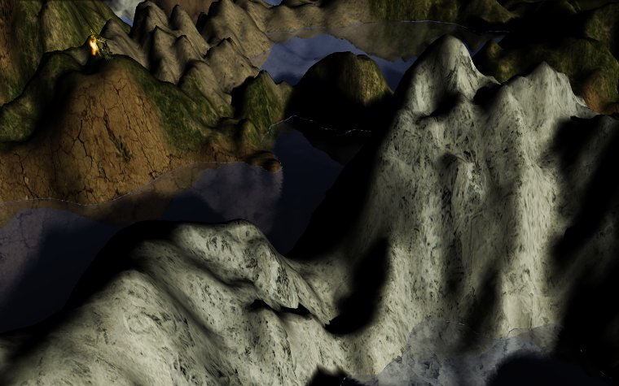
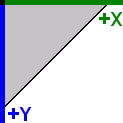

Terrain
OmegaEngine supports heightmap-based terrain rendering with multiple blended surface textures and pre-calculated self-shadowing.

The Terrain class renders heightmap-based terrains. The terrain is divided into blocks for efficient culling and rendering.
AlphaFramework.World.Terrains provides tools for terrain generation, editing, and storage.
Coordinates
Terrain data uses a 2D coordinate system for heightmap and texture data. This coordinate system is directed right-downwards (as used in graphics files).

These 2D coordinates map to the 3D engine coordinate system:
| Axis | Terrain Dimension |
|---|---|
| Positive X axis | Width of the terrain |
| Positive Y axis | Height of the terrain |
| Negative Z axis | Depth of the terrain |